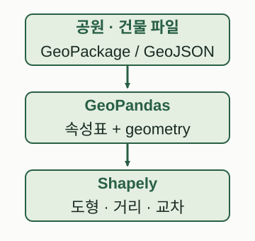
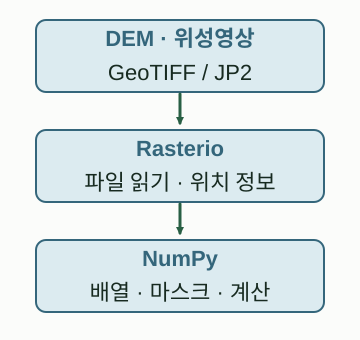

START HERE / LIBRARIES & DATA
도구와 용어부터 이해하기
Python 언어, 라이브러리, 파일 형식, 데이터 제공처를 구분하는 입문 안내입니다.
이 페이지에서
라이브러리(library)는 미리 만들어 둔 기능을 내 Python 코드에서 불러 쓰는 도구입니다. Python은 언어이고, GeoPandas·Rasterio는 그 언어로 사용하는 라이브러리입니다. QGIS는 창과 메뉴가 있는 GIS 프로그램입니다. 같은 분석을 QGIS 버튼으로 할 수도 있고 Python 코드로 반복 자동화할 수도 있습니다.
설치는 내 실행 환경에 기능을 가져오는 일이고, import는 설치한 기능을 현재 코드에서 불러오는 일입니다. 패키지는 코드의 구성·배포 단위입니다. API는 함수의 이름, 입력과 출력처럼 기능을 사용하는 약속입니다. 01장에서 처음부터 설명합니다.
같은 공간도, 자료의 모양에 따라 도구가 달라집니다
좌표와 도형을 가진 표

GeoPandas가 공간표를 다루고 Shapely가 도형 연산을 맡습니다. 파일 입출력 엔진으로는 pyogrio 등을 사용합니다.
그림 크게 보기 ↗셀마다 숫자가 있는 격자

Rasterio가 파일과 지리참조를, NumPy가 숫자 계산을 맡습니다. 계산 결과는 Rasterio로 다시 저장합니다.
그림 크게 보기 ↗입력 자료 → Python 자료구조 → 계산 도구 순으로 읽습니다. 모든 데이터가 모든 파일 형식에 들어가는 것은 아닙니다.
직접 제작한 교육용 개념도 · 설명 근거: GeoPandas 자료구조 · Rasterio 읽기
GeoPandas는 무엇인가
GeoPandas는 위치와 도형을 가진 표를 다루는 Python 라이브러리입니다. 건물마다 한 행을 만들고 이름·용도·높이를 일반 열로, 건물 외곽선을 geometry 열로 보관합니다. 이 공간표가 GeoDataFrame입니다. pandas는 일반 표를, GeoPandas는 여기에 공간 기능을 더한 표를 다룹니다.
공원 경계 안의 건물 찾기, 30m 주변 건물 연결하기, 필지별 녹지 면적 계산하기에 사용합니다. 도형을 계산하는 핵심 도구는 Shapely이고, 파일 입출력에는 pyogrio 같은 엔진을 사용합니다. 02장 자료구조 → 2부 GeoPandas·Shapely. 공식 소개
Shapely는 무엇인가
Shapely는 점·선·면 도형과 그 관계를 계산하는 라이브러리입니다. Point는 점, LineString은 선, Polygon은 면입니다. buffer는 주변 범위, intersection은 겹치는 부분, distance는 거리를 계산합니다.
Shapely는 도형을 평면 좌표로 계산합니다. CRS 관리와 좌표 변환은 GeoPandas·pyproj 등의 역할입니다. 경위도 숫자에 바로 buffer(30)를 적용하면 30m가 아닙니다. 03장 좌표계, 06장 도형 연산. 공식 설명서
Rasterio와 NumPy는 무엇인가
Rasterio는 위치 정보가 있는 격자 영상 파일을 읽고 쓰는 라이브러리입니다. DEM 고도, 위성영상 밴드, 토지피복 등이 래스터에 해당합니다. GeoTIFF를 열어 숫자 배열과 CRS·셀 크기·위치 변환·NoData를 확인하고 결과를 다시 저장합니다.
NumPy는 숫자 배열을 저장하고 계산하는 라이브러리입니다. 고도 배열에서 평균·경사·마스크를 계산하거나 적색과 근적외선 배열로 NDVI를 만들 때 사용합니다. NumPy 배열 자체에는 지리참조가 없으므로 메타데이터를 따로 보존합니다.
“GeoTIFF 읽기(Rasterio) → 고도 배열 계산(NumPy) → 경사도 GeoTIFF 저장(Rasterio)”처럼 역할이 이어집니다. 15장 Rasterio 입문 → 18장 DEM 실습. Rasterio 공식 문서, NumPy 소개
지도와 네트워크 도구
| 이름 | 종류와 역할 | 입력 → 출력 | 읽을 곳 |
|---|---|---|---|
| Matplotlib | 정적 그림 라이브러리 | 배열·표·도형 → 그래프·SVG | 09장 |
| Folium | Leaflet 웹지도 생성 라이브러리 | 좌표·GeoJSON → 지도 HTML | 10장 |
| MarkerCluster | 표식 묶기 플러그인 | 많은 표식 → 확대 수준별 군집 | 10장 |
| NetworkX | 그래프 분석 라이브러리 | 노드·간선·가중치 → 경로·거리 | 23장 |
| OSMnx | OSM 조회·도로망 구성 라이브러리 | 지역·OSM 자료 → 도로 그래프 | 24장 |
| OpenStreetMap | 참여형 지도 데이터 프로젝트 | 참여자 편집 → 도로·건물 자료 | OSM 저작권 |
Folium의 군집 표시는 공간통계의 군집 분석과 다릅니다. NetworkX의 최단경로는 연결 구조와 가중치에 따릅니다. 도로 그림이 교차한다고 반드시 노드가 연결된 것은 아닙니다.
AI와 BIM으로 가는 도구
| 이름 | 무엇인가 | 역할과 주의 | 읽을 곳 |
|---|---|---|---|
| PyTorch | 텐서·신경망 라이브러리 | 데이터·라벨·검증으로 패턴 학습 | 29장 |
| CNN | 신경망 구조 계열 | 필터로 주변 셀의 패턴을 읽음 | 30장 |
| U-Net | 영상 분할 모델 구조 | 축소·확대·skip connection | 32장 |
| scikit-image | 영상 처리 라이브러리 | 연결 영역·면적 등 후처리 | 31장 |
| IFC | BIM 교환 데이터 표준 | 객체·속성·3차원 형상·지리참조 | 34장 |
| IfcOpenShell | IFC 처리 도구 | IFC 읽기·쓰기·형상 처리 | 공식 문서 |
GeoAI는 지리공간 자료에 AI를 적용하는 분야입니다. Spatial AI는 더 넓게 공간 관계·장면·환경의 이해와 추론에도 쓰입니다. 이 책은 실제 데이터·모델·검증 작업을 중심으로 설명합니다.
라이브러리가 아닌 이름도 구분합니다
- CRS: 좌표가 지상 위치를 뜻하도록 정의하는 좌표참조체계. EPSG 코드는 등록된 좌표계 등의 식별 번호입니다.
- GeoPackage·GeoJSON·GeoParquet·GeoTIFF: 저장 형식. pyogrio·pyarrow는 입출력을 돕는 라이브러리입니다.
- DEM: 수치표고모형. NDVI: 적색·근적외선에서 계산하는 식생 관련 지수입니다.
- Sentinel-2A: 개별 위성. MSI: 센서. L2A: 처리 수준. 서로 같은 말이 아닙니다.
- NGII·VWorld·공공데이터포털: 기관 또는 제공 서비스. STAC은 공간·시간 자료 카탈로그 규약입니다.
- GitHub Pages: 정적 사이트 호스팅. Python 분석은 미리 실행하고 문서와 작은 결과 파일을 게시합니다.
어디서 시작하나요
처음이라면 1부 01장부터, 표·도형은 2부, DEM은 5부, 위성영상은 6부, AI는 9부로 이동합니다. 왼쪽 목차와 전체 로드맵은 동일한 10부 35장 순서를 사용합니다.
각 도구의 입력·출력·예제와 공식 출처는 연결한 장에 있습니다. 확인일: 2026-09-30.